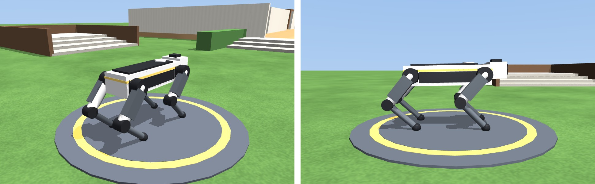
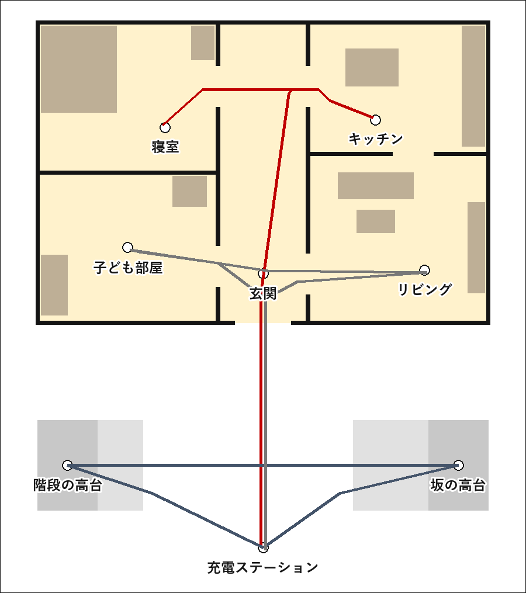
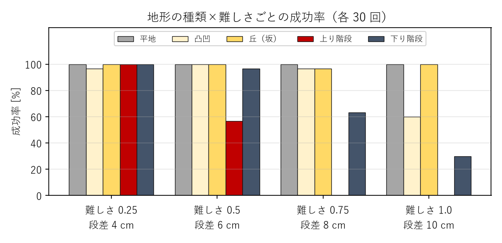
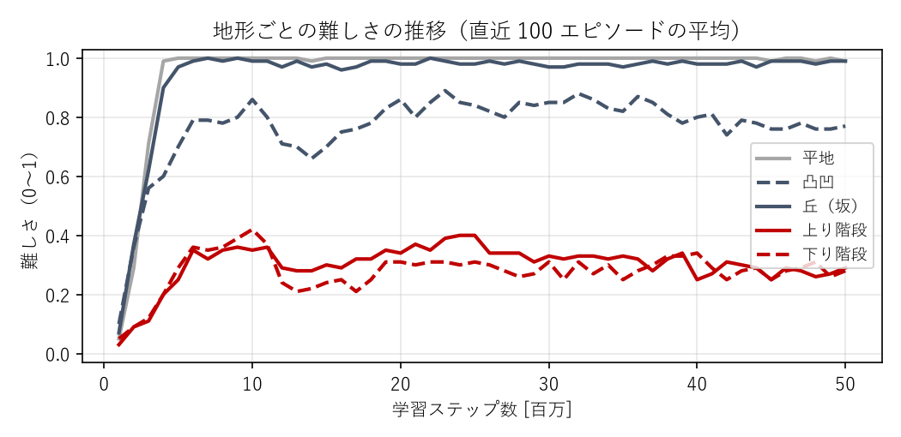

「キッチンで荷物を受け取って、寝室に届けて」のような日本語の指示を出すと、犬型の四足歩行ロボットが家と庭の中を、壁や家具を避け、玄関の階段や庭の坂を越えて、指示どおりの順に歩いて回るシステムを、物理シミュレータ MuJoCo 上に作った。指示の解釈はパソコンの中で動く LLM（gemma4 / Ollama）、経路は間取り図からの A* 探索、歩行は強化学習（PPO）で得た方策が担当する。ロボット・家・庭はすべて自作した。
家の中で荷物を運んだり、子ども部屋を見回ったりするロボットを、専門知識のない人が普段の言葉で動かせるようにしたいと考えた。そのために次の 3 つの課題を、それぞれ次の方法で解いた。
| 課題 | 選んだ方法 |
|---|---|
| 家には玄関の段差・庭の階段・坂がある | 車輪ではなく四足歩行にし、足元の地形を見ながら歩く方策を学習する |
| 指示は普段の言葉で出したい | LLM で指示を「立ち寄る場所の順番」に変換する |
| 家の間取りや会話を外部に送りたくない | 外部の API を使わず、パソコンの中で動く LLM（Ollama）を使う |

| 体 | 胴体 6 kg、脚 4 本（太もも・すね各 0.21 m）、各脚は外転・股・膝の 3 関節で計 12 関節、全体で 12.5 kg、立った胴体の高さ約 0.33 m |
| 制御 | 関節の位置制御（比例ゲイン 60、最大トルク 30 N·m）。方策は「立ち姿勢からの関節角のずれ」（±0.4 rad）を 50 Hz で出力 |
| 観測（88 次元） | 地面からの胴体の高さ、重力の向き・速度・角速度（胴体座標系）、12 関節の角度と速度、直前の行動、ゴールの方向と距離、歩行クロックの位相、胴体のまわり 35 点の地面の高さ（前 0.6 m〜後ろ 0.3 m、左右 0.3 m、下向きのレイで測る） |
| 報酬 | 加点：ゴールへ近づく速さが目標 0.8 m/秒に近い、胴体の前がゴールを向く、足の接地が歩行クロック（周期 0.5 秒・対角の脚を交互に接地するトロット）に合う、到着ボーナス。 減点：横方向の速度、胴体の傾き、地面からの高さの 0.33 m からのずれ、脚の開き、行動の急な変化、関節速度、トルク。胴体が地面から 0.18 m より下がるか大きく傾いたら転倒として終了 |
| 地形 | 12 m 四方の高さマップ（5 cm 間隔）を毎回作り直す。平地・凸凹（±0.5〜3.5 cm）・丘（急な所の勾配 約 8〜14°）・上り階段・下り階段（段差 2〜10 cm、踏み面 0.3〜0.45 m）の 5 種類 |
| 学習 | PPO（Stable-Baselines3）、16 並列環境、方策・価値とも 256×256 の MLP、観測と報酬を正規化、学習率は最後に 0 まで直線的に下げる。5,000 万ステップ（CPU のみ、約 4.8 時間）。最終時点のモデルを採用 |

8 つの場所（充電ステーション・玄関・リビング・キッチン・寝室・子ども部屋・階段の高台・坂の高台）の名前と説明をシステムプロンプトで与え、指示を {"route": [...], "reply": "..."} の JSON に変換させる。Ollama の構造化出力（JSON Schema）で route の要素を場所の名前の列挙型に制限した。「帰ってきて」は充電ステーションと解釈させる。
壁・家具・手すり・植え込みを 10 cm 格子の地図に描き、ロボットの幅の半分＋余裕（0.35 m）だけ太らせて A*（8 近傍）で最短経路を探し、見通しのきく点まで飛ばして経由地を間引く。家に出入りする経路は、玄関の階段の下と扉の内側の 2 点を必ず通し、階段を正面から上り下りさせる。経由地を順にゴールとして方策に渡し、途中の経由地は 0.45 m、目的地は 0.6 m まで近づいたら次へ進む。
地形の種類と難しさを固定し、3.5 m 先のランダムな方向に置いたゴールに 20 秒以内に転ばずに着けば成功として、各 30 回試した。

平地と丘はすべての難しさで 97% 以上、凸凹は ±2.8 cm まで 97% 以上（±3.5 cm で 60%）だった。上り階段は段差 4 cm で 100%、6 cm で 57%、8 cm 以上は 0%、下り階段は 6 cm で 97%、8 cm で 63% だった。
LLM が変換した経由地を、初期姿勢の乱数を変えて各 20 回実行した。全地点に順に着けば成功とした。
| 指示 | LLM の出力（route） | 成功 | 転倒 | 平均所要時間 |
|---|---|---|---|---|
| キッチンで荷物を受け取って、寝室に届けて | キッチン → 寝室 | 85% | 10% | 30.3 秒 |
| 庭の階段を上って高台に行き、そのあと坂の上にも寄ってから充電ステーションに戻って | 階段の高台 → 坂の高台 → 充電ステーション | 75% | 25% | 29.6 秒 |
| 子ども部屋のおもちゃ箱を見てきて、リビングを通って帰ってきて | 子ども部屋 → リビング → 充電ステーション | 85% | 10% | 38.0 秒 |
LLM は 3 つの指示すべてを正しい場所の順番に変換した。失敗した 11 回の内訳は、玄関の階段を上る途中の転倒 4 回、玄関の階段の手前で止まって時間切れ 2 回、庭の階段を上る途中の転倒 2 回、庭の階段を下りる途中の転倒 1 回、坂を下りる途中の転倒 2 回で、すべて段差や坂のある場所で起きた。壁や家具にぶつかって失敗した例はなかった。

コード一式：https://github.com/azs4n10/pai-final-quadruped（README 参照）。主なファイル：terrain_dog.py（地形を歩く環境）、house.py（家と庭・経路計画）、planner.py（LLM）、house_demo.py（指示の実行と録画）、train_goal.py（学習）、evaluate_terrain.py（評価）、make_video.py（動画）。
例：python house_demo.py --text "キッチンで荷物を受け取って、寝室に届けて"
使用ツール：MuJoCo 3.12 / Gymnasium 1.3 / Stable-Baselines3 2.9（PPO）/ Ollama（gemma4:e4b）/ Python 3.12。動画のデモは 2 倍速（画面に表示）。動画のナレーションは VOICEVOX ENGINE で合成した（音声：VOICEVOX:ずんだもん）。